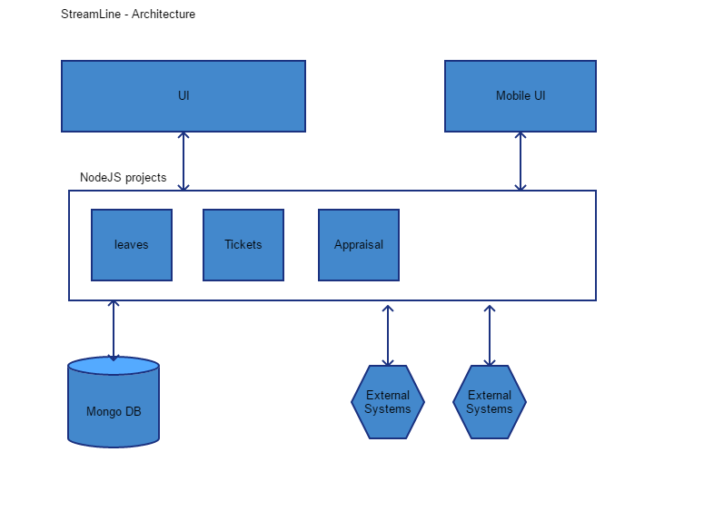

StreamLine¶
An integrated portal for RapidQube to sreamline/automate the every manual process in the company
This project is an Integrated UI of Multiple projects
Sub Projects¶
- Leaves - Apply leaves and holiday Information
- Personal Docket - Adocument management portal to save official documents
- Finance - Salary information and reimbursment process
- Appraisal - Automated appraisal process
- HR announcements - documents realted to HR policies and annouunceents
- Tickets - A ticketing system to raise and track issues.
- Rewards and Recognitions - to create a process to streamline Employee rewards and Recognitions
- IdeaBox - where anyone can post an idea and get feedback from users
Architecture¶
Table of Contents
License¶
The project is licensed under the BSD license.